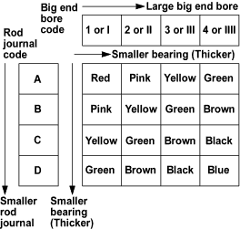

Connecting Rod Journal Code Location
- The connecting rod journal codes are stamped on the crankshaft.
Connecting Rod Journal Code Location (Letters or Bars)


- Use the big end bore codes and rod journal codes to select appropriate replacement bearings from the following table.
NOTE: Colour code is on the edge of the bearing.
